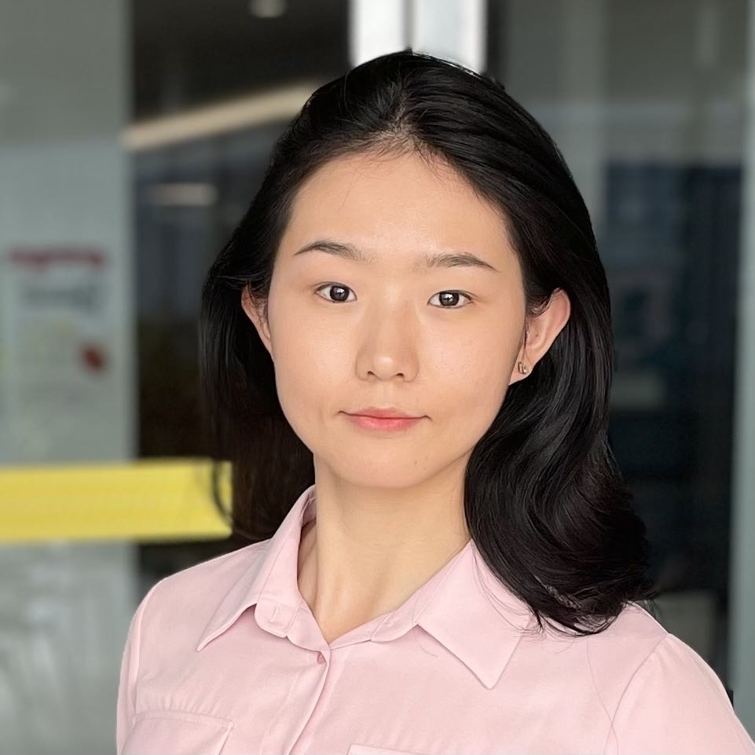

Yiliao (Lia) Song (she/her) -- Lecturer in Artificial Intelligence
Home
|  |
Yiliao (Lia) Song, Ph.D.
Lecturer in AI,
Visting Scholar @ DeSI Lab,
Address: 04.39, level 4, |
Biography
-
My research interests are in streaming data mining and trustworthy AI.
I am currently a Lecturer at School of Computer and Mathematical Sciences, The University of Adelaide,
In addition, I am a Visiting Scholar at DeSI Lab, Australian Artificial Intelligence Institute, University of Technology Sydney. I was the recipient of the Australian Laureate postdoctoral fellowship. I received my Ph.D. degree in computer science at the University of Technology Sydney in 2020, advised by Dist. Prof. Jie Lu, Prof. Haiyan Lu and Prof. Guangquan Zhang.
My publications are mainly distributed in high-quality journals or conferences, such as IEEE-TNNLS, IEEE-TFS, IEEE-TFS, IJCAI. I have served as a program committee (PC) member for NeurIPS, ICML, ICLR, ACML, AAAI and so on. I also serve as reviewers for many academic journals, such as IEEE-TNNLS, IEEE-TFS, IEEE-TKDE and so on.
Recent News
17/01/2024: One paper is accepted by KDD 2025. Congrates to the team!
17/01/2024: One paper is accepted by ACL 2025 (main). Congrates to the team!
06/02/2024: Started the Lecturer position at The University of Adelaide
17/01/2024: Two papers are accepted by ICLR 2024 (MPP, FedInverse). Congrates to the team!
06/15/2023: Our paper regarding explanable AI (XAI) and fairness received the ECIS Best RiP Paper Runner-up Award. Congratulations to the team!
05/04/2023: Our paper about multi-stream concept drift adaptation is accepted by TKDE. Congratulations to the team!
02/25/2023: One paper regarding explanable AI (XAI) and fairness is accepted by ECIS 2023. Congratulations to the team!
11/17/2022: Grateful to secure one project from the CSIRO Next Generation Graduates Programs as Associate Investigator.
09/06/2022: Grateful to secure one project from Cross-Faculty Project 2022 - UTS 2027 Cross Faculty Collaboration Scheme as Chief Investigator.
07/04/2022: Started the Research Fellow position at RMIT University
03/07/2022: Our paper about concept drift detection is accepted by TKDE. Congratulations to the team!
11/24/2021: Our paper about changing distributions and temporal dependency is accepted by TNNLS. Congratulations to the team!
08/18/2021: Our paper about upconversion nanoparticles is accepted by Nano Lett.. Congratulations to the team!
04/09/2021: Our paper about concept drift adaptation is accepted by TNNLS. Congratulations to the team!
11/05/2020: PhD Completion at University of Technology Sydney
06/22/2020: Started the Research Associate position for Laureate Project at University of Technology Sydney
Research Interests
-
My research interests lie in streaming data mining and trustworthy AI . Specifically, my current research work center around the following topics:
-
Streaming data mining:
Concept drift detection for streaming data: Detecting in real-time if a distributional change occurs.
Concept drift adaptation for streaming data: Continously adapting to new data distributions in the streaming data scenario.
Concept drift in multiple data streams: Drift detection and adaption for multiple data streams.
-
Trustworthy AI
Robust real-time prediction: Design robust data mining model to generate steadily accurate real-time prediction for non i.i.d (independent and identically distributed) data streams.
Trustworthiness of AI system: Build trustworthy AI decision making system.
Research Experience
Australian Laureate Posdoc Researcher (May 2020--May 2022)
Australian Artificial Intelligence Institute, UTS
Advisor: Dist. Prof. Jie Lu
Project: Autonomous Concept Drift
Education
Ph.D. in Computer Science (November 2020)
Faculty of Engineering and Information Technology,Master of Applied Statistics (June 2015)
School of Mathematic and Statistics, Lanzhou University, Lanzhou, China
University of Technology Sydney, Sydney, Australia.
Supervised by Dist. Prof. Jie Lu, Prof. Haiyan Lu, and Prof. Guangquan Zhang
Supervised by Prof. Jianzhou Wang